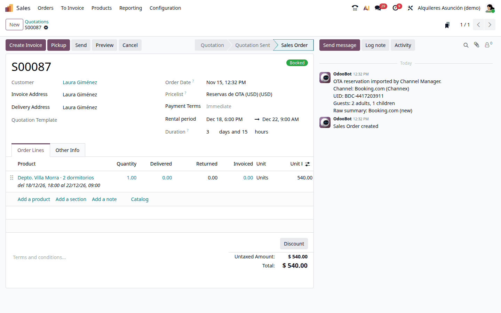

Hotel OTA Channel Manager — Rental bridge
Free companion of the Hotel OTA Channel Manager. It installs
itself when the Channel Manager and the Rental app are both
installed — nothing to configure.
- OTA reservations become rental orders with pickup and return
hours in the property's local time.
- Stays the platform did not price (iCal) are priced by the
nightly rental pricing of the room.
- Rental orders made at the front desk block the room on every
channel, together with the OTA bookings.
- With the Hotel industry, a free physical room is assigned and
the native availability is updated.
- On install, the OTA orders created before get their check-in and
check-out dates.

Español
Complemento gratuito del Channel Manager. Se instala solo cuando
tienes el Channel Manager y la app de Alquiler: las reservas de
las plataformas se vuelven órdenes de alquiler con horario local, se
usa la tarifa por noche del alquiler y las órdenes de alquiler de
recepción también bloquean la habitación en todos los canales.